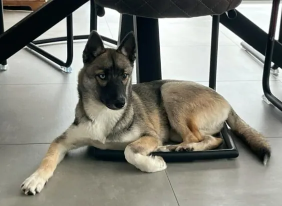
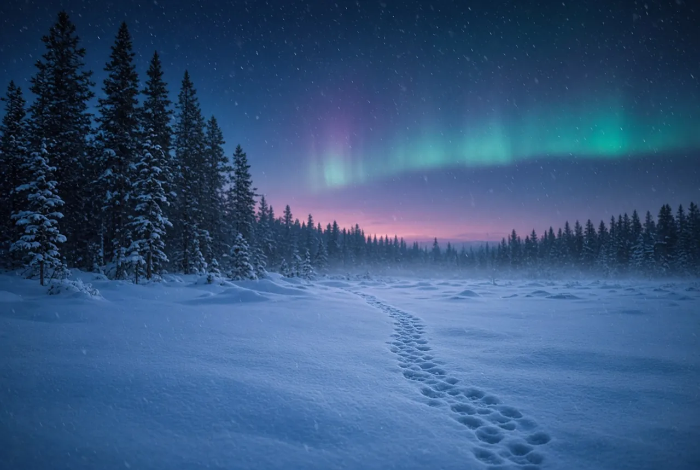
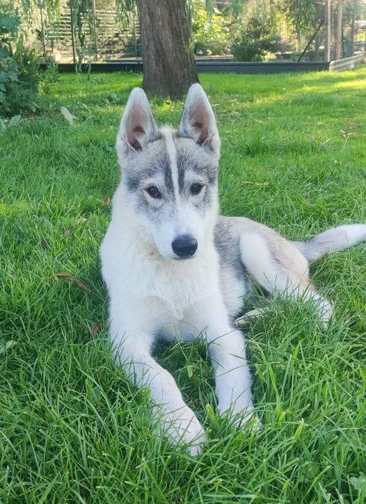
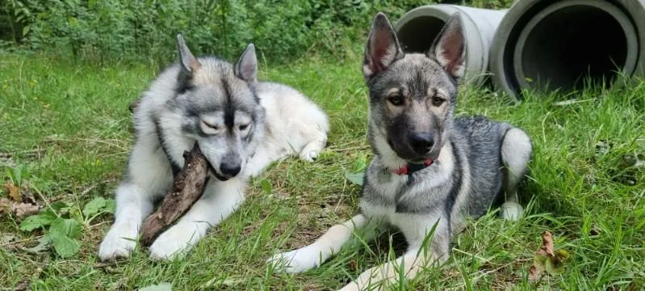
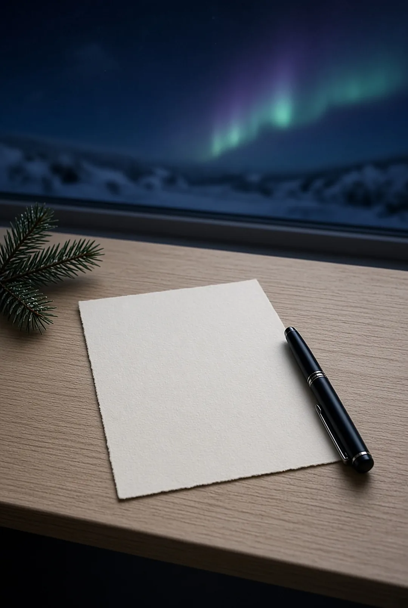
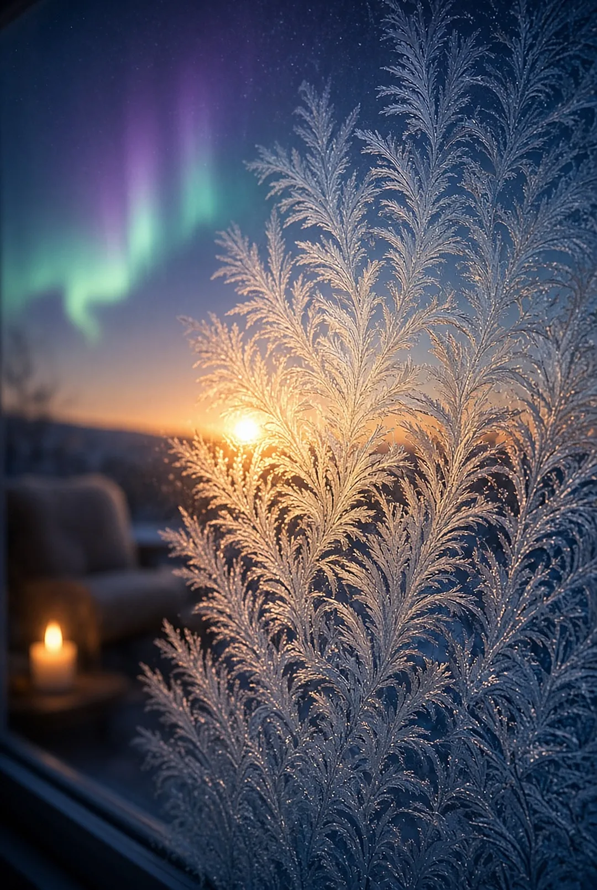
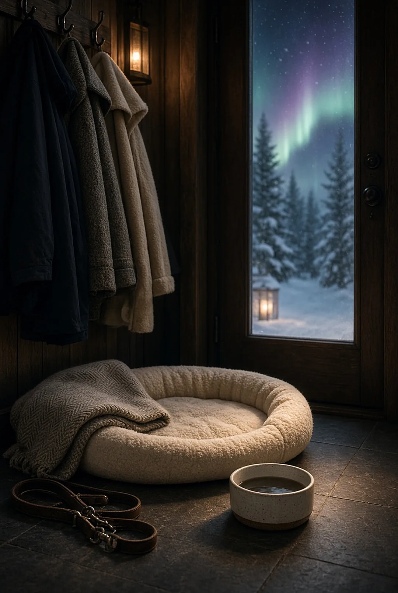
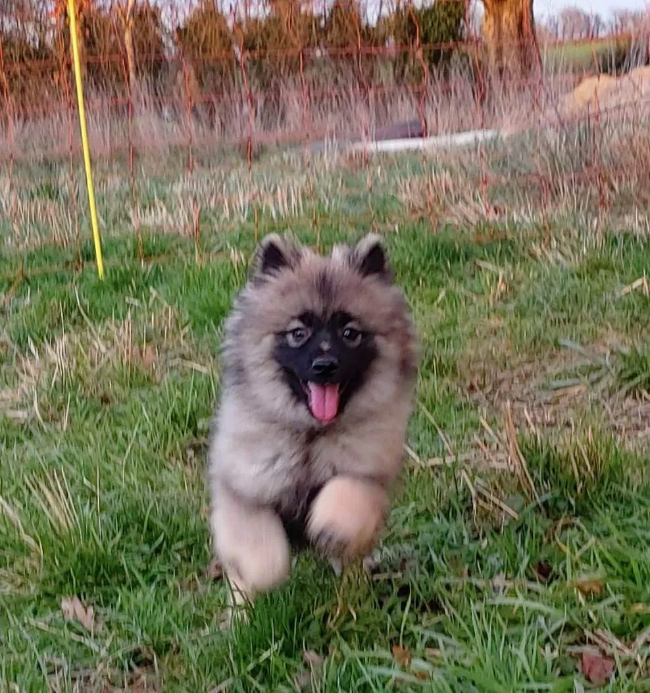
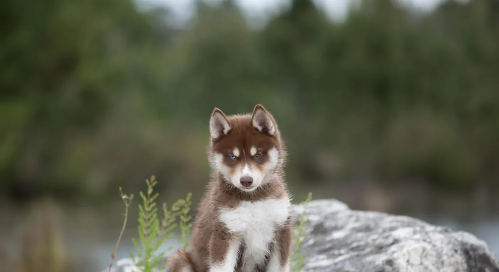
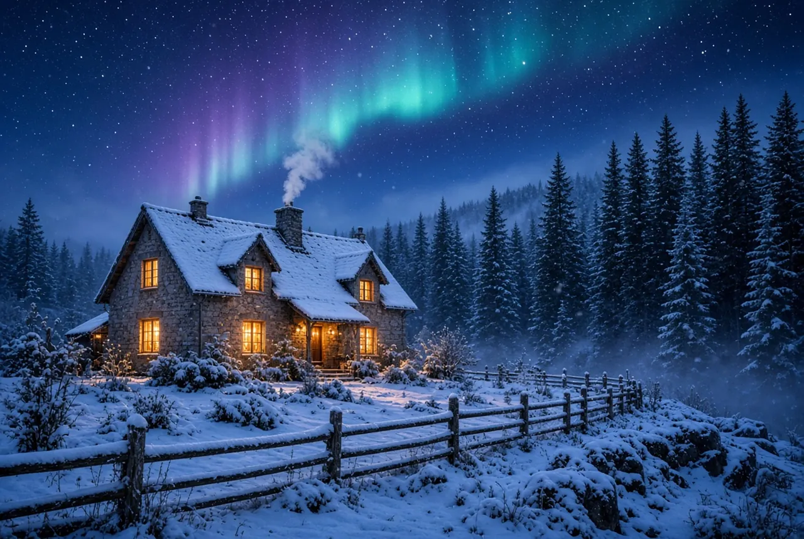

1
Premier contact
Par téléphone, par e-mail ou sur nos réseaux : parlez-nous de votre projet, de votre quotidien et de vos questions.
Sans engagement
Nous accompagnons chaque future famille avant, pendant et après l'adoption. Voici comment se passe une adoption chez nous, étape par étape.

Le parcours d'adoption
Suivez les traces : de votre premier message jusqu'à la vie à la maison.

Par téléphone, par e-mail ou sur nos réseaux : parlez-nous de votre projet, de votre quotidien et de vos questions.
Sans engagement
Faites connaissance avec nos chiens et avec les parents de la portée. C'est le meilleur moyen de découvrir le caractère du Husky Sibérien.
Modalités de visite à compléterVous nous présentez votre famille et votre mode de vie. Nous vous aidons à choisir le chiot qui vous correspond.
Conditions de réservation à compléter
Vous signez le certificat d'engagement et de connaissance des besoins du chien, comme le prévoit la loi pour toute acquisition.
Obligatoire
Au moins sept jours séparent la signature du certificat et l'arrivée du chiot. Le temps de préparer la maison.
Obligatoire
À partir de 8 semaines, votre chiot rejoint sa famille, identifié et accompagné de ses documents.
À partir de 8 semaines
Nous restons disponibles pour suivre son intégration et son épanouissement. Vous faites désormais partie de la famille.
SuiviAvant de vous lancer
Cinq questions pour faire le point. Le Husky Sibérien est un chien d'exception, qui demande du temps et de l'espace.
Questions proposées, à valider par l'éleveuse

Avez-vous du temps chaque jour pour de longues sorties et des activités ?
Votre jardin est-il entièrement clos, avec des clôtures hautes et sans passage ?
Êtes-vous prêt à brosser votre chien pendant les périodes de mue ?
Votre chien sera-t-il rarement seul pendant de longues heures ?
Avez-vous prévu le budget pour la nourriture, les soins et le vétérinaire ?
Votre bilan s'affiche ici, au fil de vos réponses.
Candidature
Quatre étapes pour nous présenter votre projet. Nous revenons vers vous pour en discuter.
Questions fréquentes
Pour la portée de Yarna et Volverine, le prix annoncé est de 1 100 €. Les prix des prochaines portées seront indiqués sur leur fiche.
Oui : tous nos chiots sont inscrits au Livre des Origines Français.
Jamais avant 8 semaines, comme le prévoit la loi. Pour la portée de Yarna et Volverine, les départs sont possibles à partir du 7 novembre.
C'est un document que toute personne qui acquiert un chien doit signer. Il présente les besoins du chien et vos obligations. Il doit être signé au moins 7 jours avant l'arrivée du chiot.
Attestation de cession, certificat vétérinaire, document d'information et carte d'identification. Liste complète à confirmer
Contactez-nous pour en parler. Modalités de visite à compléter

Nous rendre visite
Appelez-nous ou écrivez-nous : nous prenons le temps de répondre à chaque famille.
1 rue de la Croix Poquet, 91650 Breuillet